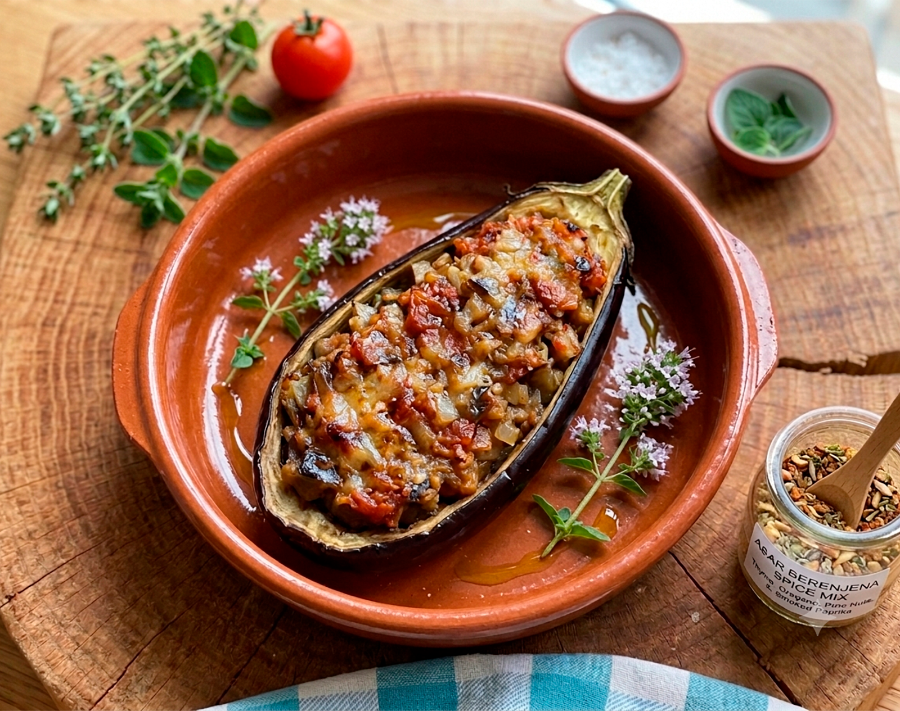

Receta saludable
Barquitos de berenjena al tomate
Una crema fría muy suave y refrescante, hecha con espárragos, aguacate y yogur para conseguir una textura cremosa y un sabor delicado.
Ingredientes
- 1 berenjena grande
- 1 cebolla
- 2 o 3 cucharadas de tomate frito
- 1 cucharada de aceite de oliva virgen extra
- Orégano
- Tomillo
- Sal
Preparación
- Asa la berenjena entera, sin pelar, en el horno o en el microondas hasta que esté tierna.
- Córtala por la mitad y vacía con cuidado la pulpa con una cuchara.
- Trocea la pulpa y resérvala.
- Pica la cebolla y sofríela en una sartén con el aceite de oliva.
- Añade una pizca de orégano, tomillo y sal.
- Cuando la cebolla esté bien pochada, incorpora la pulpa de la berenjena y el tomate frito.
- Cocina un par de minutos para que se integren los sabores.
- Rellena las mitades de berenjena con el sofrito y gratina unos minutos en el horno hasta que queden bien calientes y ligeramente doradas.
Consejo práctico
Si quieres que el plato resulte un poco más completo, puedes añadir por encima un poco de queso rallado antes de gratinar o acompañarlo con una fuente de proteína.